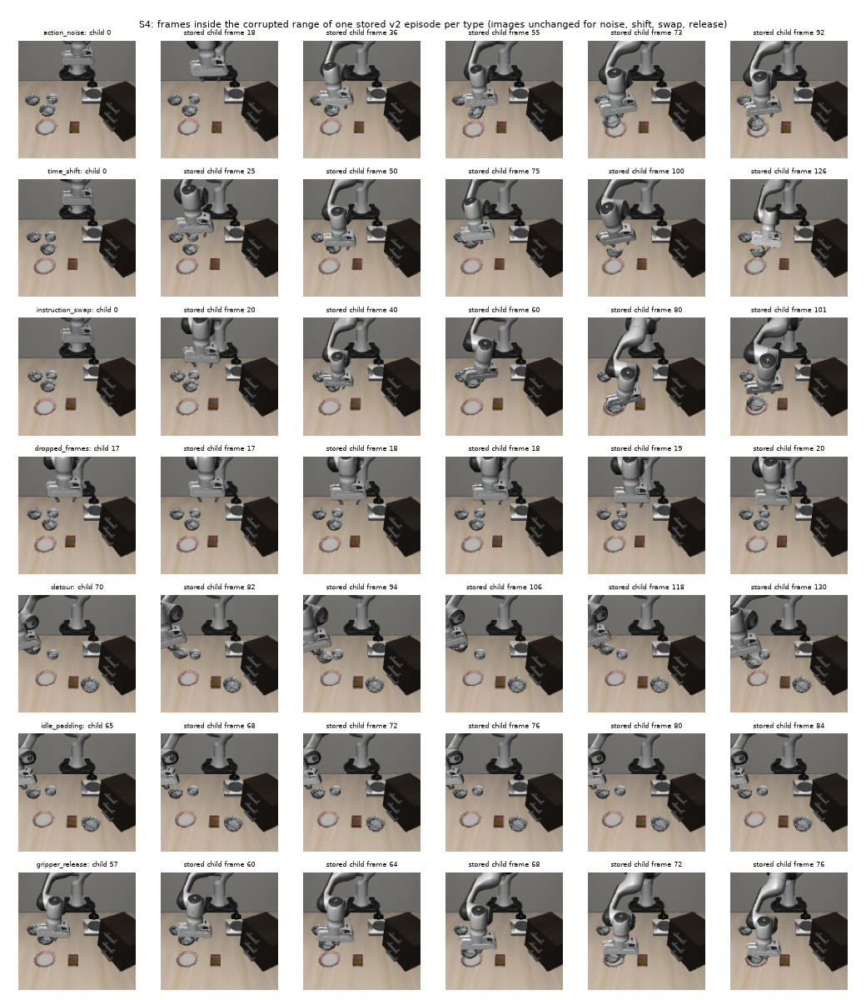

← Ground truth (injection experiment)
A full-scale LIBERO dataset in which 91 of the 960 candidate episodes (9.48%) carry a known corruption, 13 of each of seven types, with the answer key stored apart and every byte checked back against its label. v3 replaces v2.
This is the "Ground truth" deliverable of the milestone table: an injected dataset with a known answer, built from LIBERO's original demos as clean references. The budget is 5–10% of the training set, and the references stay untouched.
Injection experiment with 5–10% corrupted episodes, using LIBERO's original demos as clean references. — §10, p. 20
Treat LIBERO's original demos as clean; corrupt only the training copy. — §8.7, row "Benchmark demos (PoC)", p. 15
| File / function | What it does |
|---|---|
vlapoc/groundtruth.py::select_injection | Seeded, stratified assignment of episodes to types: 13 per type, each type over 13 distinct tasks (both suites), 4 or 5 corrupted per task, no type repeated inside a task, only eligible episodes. |
build_edits, derive_injection, derive_injection_run | Turn the assignment into EpisodeEdits, call derive_version, and record an MLflow derive run with a labels_sha256 tag. |
retire_version (CLI retire) | Writes a fence.json on a superseded version through lineage.write_fence; 10 lines over the existing fence. |
python -m vlapoc.groundtruth derive | The CLI used to create v3 (command below). |
scripts/verify_injection_s4.py (299 lines) | Recomputes everything from stored bytes: allocation, hashes, invariants, clip counts, lineage trace, v2-vs-v3 comparison. |
| AC | Source | Result | Evidence (artifacts/s4_v3_run.txt) |
|---|---|---|---|
AC4.1 v3 has 1000 episodes and 91 labels, 13 per type; all labelled episodes in v0/candidate, none in v0/reference | PoC §2.5 p.5; §8.7 p.15 | ✅ | "labels rows 91; per type {… 13 each}; all in v0/candidate: True; in reference: 0" |
| AC4.2 Stratification (13 distinct tasks per type, both suites, 4 or 5 per task, 91/960) | PoC §2.5 p.5; RoboDrop A.1 | ✅ | Suite split 6/7 for every type; 11 tasks with 5 and 9 with 4; type repeated within a task: False; 91/960 = 9.48% |
AC4.3 check_blind(v3) == []; verify_version passes; 40 references inherited unchanged | PoC §2.1 item 4 p.3; §8.3 p.14 | ✅ | check_blind(v3) = []; verify_version ok=True (77 files); reference hashes equal v0's |
| AC4.4 Invariants hold on the stored bytes, not only in memory | vla-build | ✅ | All 1000 episodes re-hashed from stored bytes equal the table; 909 unedited equal v0's; 91/91 labelled episodes hash to their label; 0 failing episodes |
AC4.5 Clip totals of the 13 action_noise labels match a recount | Owner decision 1 | ✅ | n_clipped 65 (0.90% of translation values), n_beyond_clean_range 139 (1.92%); recount from stored bytes 65 and 139; the parents have 0 |
| AC4.6 Disk and time recorded | brief constraint | ✅ | Total 562.2 s (write 538.5); 200,860 frames; free disk 86 → 78 GiB; byte sum 7,326,736,215 (see the size note) |
AC4.7 lineage trace reaches v0 and its raw files; the run tags labels_sha256 | PoC §2.1 item 1 p.3 | ✅ | trace(d3dd9fd4): 3 runs (build, derive, split), reaches v0, 20 raw files; labels_sha256 3e14922a63cf equals derivation.json |
| AC4.8 v3 supersedes v2: same 91 episodes and types, 78 rows keep their hash, 13 time_shift rows differ; v2 fenced and refused | Owner ruling A | ✅ | All three True; length_change −40 in v3 (none in v2); fence reason "superseded by v3", superseded_by 002a68e4caf2; open_for_method("v3/candidate") opens 960 |
The command that made v3, and what it returned (artifacts/s4_v3_derive_cli_output.txt, trimmed):
HF_DATASETS_CACHE=$PWD/data/hf_datasets_cache .venv/bin/python -m vlapoc.groundtruth derive --parent v0 --name v3 --per-type 13 --seed 0
"dataset_version_id": "002a68e4caf285c0b4b4d06118c50d106b161a92a092fc6b529859b9925414c1",
"parent_version_id": "3c4dca68d6f196c10d249b43bd94ae32f51b905735f25c7865e3c943caf553b7",
"n_edits": 91, "n_episodes": 1000, "n_frames": 200860,
"labels_sha256": "3e14922a63cfb345236c47caec0de74c0dee37f00c5ed9d1ffa1c5c78bad6549",
"mechanism": "one LeRobotDataset writer pass in parent episode order (episode_index preserved)",
"blind_offending": [],
"timing_s": {"guards": 2.4, "write": 538.5, "hash_and_blind_check": 19.1, "total": 562.2},
"fraction": 0.0947916...The same selection (seed 0) that made v2 made v3, so only the 13 time_shift episodes changed. The other 78 labelled episodes keep their v2 content hashes (checked, AC4.8).
| Version | Status | Frames | Bytes (sum of file sizes) | Note |
|---|---|---|---|---|
v1 16076b9c5cb2 | fenced (positional leak) | — | 7,353,993,717 (6.849 GiB) | 100 noised episodes, last by position; unclipped. Not rebuilt (owner decision 1) |
v2 eaeed043455a | fenced: superseded by v3 | 201,380 | 7,346,100,191 (6.842 GiB) | Its time_shift had a 40-step idle tail (found at AUROC 1.000 by idle steps) |
v3 002a68e4caf2 | current ground truth | 200,860 | 7,326,736,215 (6.824 GiB) | time_shift is a trim: 13 × (−40) = −520 frames |
For the owner: v2's physical copy, data/lerobot/libero_spatial_10__v2 (about 6.8 GiB), is kept on disk and was not deleted by any agent. It is fenced, so methods cannot open it, and it can be re-derived from code in about 9 minutes. Deleting it is your call, together with the other leftovers from the evaluation feature (the HF datasets cache and data/lineage_scratch). Sizes here are byte sums (re-computed now, artifacts/summary_sizes.txt), not du: on a freshly written copy du -sh printed 7.4G for v3 and kept falling (7,775,640 KiB then 7,456,304 KiB) while the bytes did not change. The analyzer's reconciliation attributes this to allocated-but-unused tail blocks on a fresh copy (measured slack 606 MiB on v3, 0.2 MiB on two-day-old v2); that the blocks are later reclaimed is inferred.
artifacts/s4_v3_allocation.csv. Nine tasks hold 4 and eleven hold 5, which is 91 in total.
gripper_release episodes release before 0.8 of the episode, which is arguably less "near placement" than §4.5 intends (R10, measured).